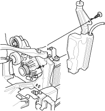
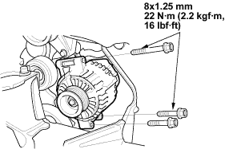
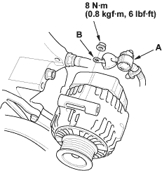

- Make sure you have the anti-theft code for the radio, then write down the frequencies for the radio's preset buttons.
- Disconnect the battery negative cable, then disconnect the positive cable.
- Remove the front bumper, refer to the 2001 Civic Shop Manual Supplement, P/N 62S5A21 (see page 20-8).
- Remove the right side head light, refer to the 2001 Civic Shop Manual (see page 22-114).
- Remove the reserve tank.

- Remove the drive belt (see page 4-25).
- Remove the three bolts securing the alternator.

- Disconnect the alternator connector (A) and BLK wire (B) from the alternator.

- Remove the alternator.
- Install the alternator and drive belt in the reverse order of removal.
- Connect the battery positive cable and negative cable to the battery.
- Enter the anti-theft code for the radio, then enter the customer's radio station presets.